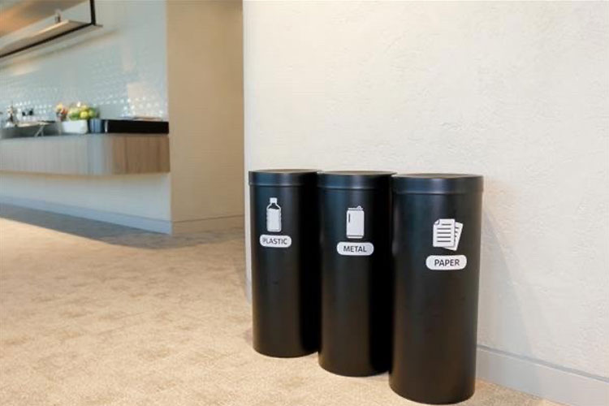
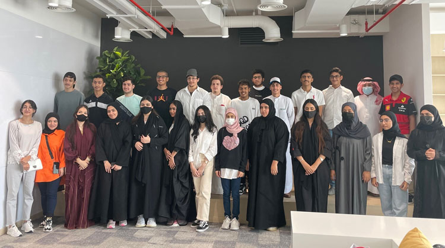
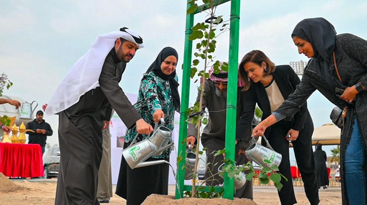
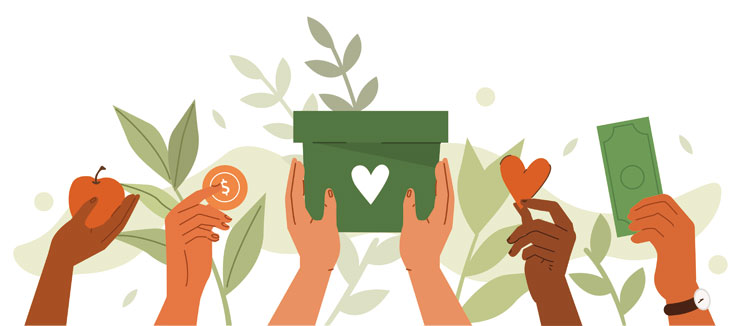
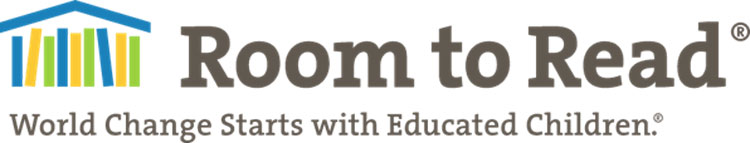

SICO acted as the strategic partner in launching this women-focused investment programme. The overarching objective of the programme is to develop a pipeline of women investment leaders within the Kingdom of Bahrain. The set of proposed trainings aim to enhance the investment skillset of graduates and professionals in Bahrain’s investment field through a full range of courses that include soft skills, business fundamentals, and investment universe workshops. An internship programme will be arranged at the end to provide participants with an opportunity for on-the-job learning experience and development. The trainings will be delivered by Bahrain Institute of Banking & Finance (BIBF) as the knowledge partner.

SICO has implemented a “No Plastic, No Printing” policy, which falls in line with its commitment to becoming a more sustainable organization. Since plastic ends up in our oceans and negatively affects the ecosystem, SICO will no longer be using or supplying plastic bottles, cutlery, or cups. Additionally, SICO issued reusable bottles to all employees. Printing has been greatly reduced across the offices, with employees only printing when absolutely necessary.
SICO has also begun recycling paper, plastic bottles, and metal cans in its offices, in addition to working with a local supplier to recycle any electronic waste generated.

This year, SICO launched the Financial Literacy Summer Camp 2022 in partnership with BIBF and RHF. The program, which successfully wrapped up with 30 graduates, is a unique and highly effective financial literacy program that is not only fun for participants, but incredibly effective. It allows teens between the ages of 13 and 18 to acquire a basic financial education early in life so they can develop a healthy lifestyle with it as adults and use it intelligently. The first edition of this programme has been designed to incorporate gamification, as well as field trips, that will embed core financial literacy and personal financial management values in the youth.

SICO provided 1,194 trees to be planted along the 16th of December Avenue in partnership with The National Initiative for Agricultural Development (NIAD)’s ‘Forever Green’ campaign, which is held under the patronage of Her Royal Highness Princess Sabeeka bint Ibrahim Al Khalifa. SICO initiated the first tree planting of the campaign in 2019 and this is the third time that it makes a contribution to the project. Forever Green is aimed at preserving the environment and national resources, reducing the carbon footprint to support the national goal of reaching net zero in 2060, and increasing the Kingdom’s green spaces.
Promoting environmental preservation and sustainable practices in Bahrain is a key priority for SICO, in order to foster a healthy, clean, and safe environment for the community at large. The bank is working to identify and implement new initiatives that will see it minimizing its carbon footprint and integrate environmental awareness and sustainability into the fabric of its operations.

SICO donated all its furniture from our previous offices to nine different societies around the country, including Uco Elderly Care, Batelco for Childcare, and Al Hidd Charity. It also donated some of the furniture to families in need in various areas around Bahrain.
This contribution comes as part of SICO’s efforts to give back to its communities through acts of kindness and charity. It is also indicative of its commitment to sustainability through recycling and reusing in order to effectively minimize waste output.

This year, SICO contributed to a fundraiser organized to raise money for Room to Read, a global non-profit organization supporting girl’s education across Asia and Africa to improve literacy and gender equality in education. As one of the most highly recognised organisations in the world for scale and impact in international education, Room to Read has benefited 32 million children to date and distributed more than 36 million children’s books in 57 different languages.